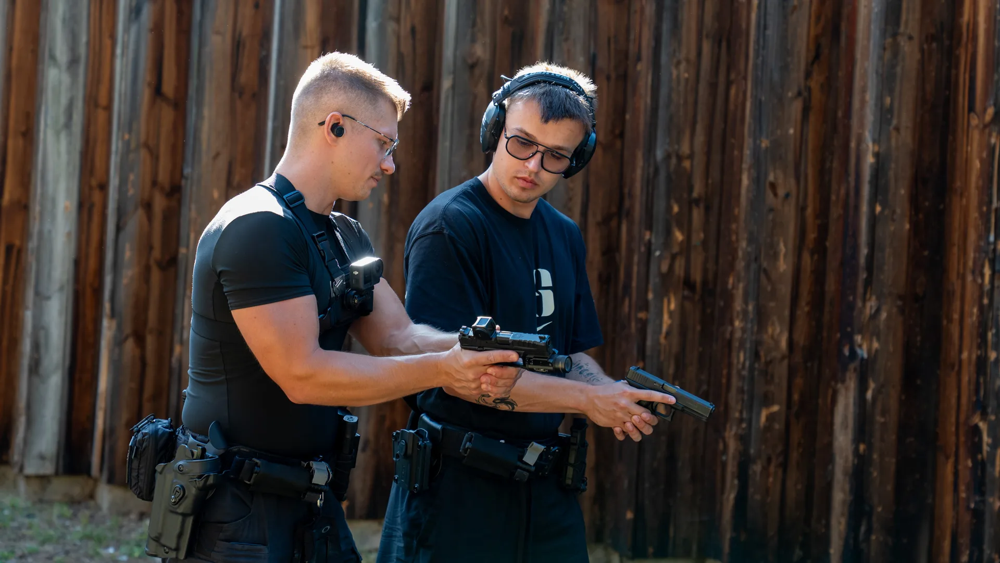

Cześć, jestem Elba
Dominik Elbanowski, instruktor z Poznania. Za Ready Steady Grow stoję ja sam — od pierwszej rozmowy po ostatni strzał na strzelnicy. Tworząc system, nie można być kimś, kto nic w życiu nie przeżył. System to zbiór przeżyć, emocji, doświadczeń i sytuacji, które ukształtowały człowieka. W tym wypadku mnie.
Główny bohater własnego filmu
Doświadczenie zbieram od zawsze. Jako mały chłopak oglądałem bajki, przez które bycie głównym bohaterem stało się dla mnie czymś naturalnym. Życie traktuję trochę jak film, w którym gram główną rolę. Nie jest to film jednego gatunku: bywa komedią, dramatem, horrorem, thrillerem, a czasem po prostu biografią.
Ze sportem jestem od bardzo dawna. Uwielbiałem wszystkie sporty drużynowe i całkiem nieźle mi szło. Biegałem po osiedlu z karabinkiem na kulki, a moją pierwszą płatną pracą było naprawianie takich pistoletów kolegom. Potem była piłka ręczna, koszykówka, siłownia, breakdance przez parę lat, MMA, Muay Thai i Krav Maga. U mnie nic nie było stałe — zawsze szukałem czegoś nowego.
W międzyczasie skończyłem studia z zarządzania i komunikacji w biznesie, zostałem project junior managerem i pracowałem w wielu miejscach i sektorach.

Na zajęciachW 2022 roku rozpoczęła się moja przygoda ze światem militariów i strzelectwem. Pierwsze chwile na osi, pierwsze wyjścia w teren, spanie pod gołym niebem przy ognisku, poznanie podstaw pierwszej pomocy, techniki linowe i zajawka na taktyczny sprzęt i ubiór. Nie chciałem poprzestać na jednej umiejętności, bo stawiam na wielopłaszczyznowość.
Moje kompetencje- • Instruktor strzelectwa: sportowego, bojowego i dynamicznego
- • Prowadzący strzelanie
- • Sędzia strzelectwa sportowego i dynamicznego
- • Ratownik KPP i ratownik pola walki
- • Podstawy survivalu i praca w tej dziedzinie
- • Zawody: Tactical Games, Lekka Piechota
Człowiek od początku do końca
Stworzyłem system, w którym dbam o człowieka całościowo. Daję podstawy i twarde umiejętności: pokazuję świat strzelecki od podszewki, sprzęt, działanie broni, obsługę i strzelanie. Uczę radzić sobie w ciężkich warunkach, żeby na głowę nie padało, a w kryzysie mieć pełny brzuch i odrobinę komfortu. Rozmawiamy też o tym, co jest w środku, bo głowa to też narzędzie.
Drugi człowiek to podstawa
W świecie przepełnionym robotami i sztuczną inteligencją coraz bardziej brakuje kontaktu z drugim człowiekiem. A każdy z nas potrzebuje bliskiej relacji. Dbamy też o tężyznę fizyczną, bo sprawna osoba jest w stanie zrobić znacznie więcej, oraz o pierwszą pomoc i medycynę pola walki. Mam nadzieję, że nikomu z moich podopiecznych nigdy się to nie przyda, ale lepiej wiedzieć i nie wykorzystać, niż żałować, że się nie wiedziało.
Miks tego wszystkiego to RSG: poznanie, spokój i rozwój. To proces bez końca — kiedy opanujemy jedną umiejętność, nawet pod wpływem stresu i emocji, szukamy następnej. Nie tworzę ludzi idealnych w jednej dziedzinie. Daję możliwość bycia dobrym w wielu aspektach życia.
Podwaliną wszystkiego jest mały, dwuosobowy zespół. Każdy z nas prędzej czy później znajduje osobę, z którą chce dzielić życie. Ja poznałem taką — jest nią moja żona. Wszystko, czego się uczę i co potrafię, przekazuję jej w skondensowany sposób. Obiecaliśmy sobie, że cokolwiek złego by się działo, zawsze będziemy razem. A dwoje wyszkolonych ludzi ma znacznie większe szanse niż jeden niesamowicie dobrze wyszkolony żołnierz.
Dlatego chcę, żeby wszystko, czego uczę moich podopiecznych, przekazywali dalej swoim partnerom. Dopiero gdy potrafimy przekazać wiedzę innym, rozumiemy ją w 100%. Nie znam tej jednej idealnej drogi, ale staram się być przewodnikiem i wsparciem, gdy moi podopieczni szukają swojej.
Napisz “cześć”
Opowiedz, czego szukasz, a razem dobierzemy pakiet lub szkolenie. Najlepiej dla dwojga.